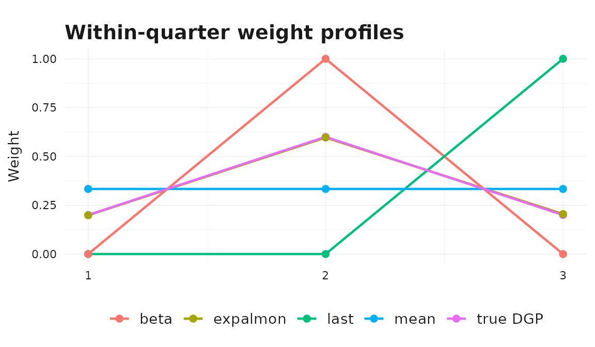
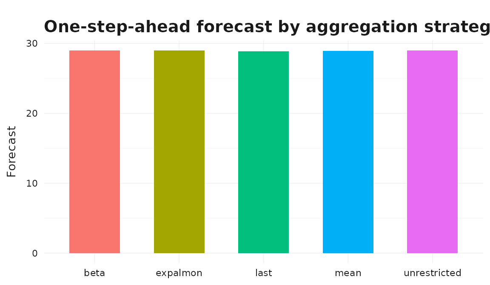

Aggregation and Mixed-Frequency Modeling in bridgr
Source:vignettes/mixed-frequency-modeling.Rmd
mixed-frequency-modeling.RmdThe Bridge-to-MIDAS Spectrum
The key design choice in bridgr is that classic bridge
equations, unrestricted mixed-frequency regressions, and parametric
MIDAS-style models all share the same estimation, forecasting, and
summary workflow. You can move between them without switching to a
different API.
bridgr supports several ways to map higher-frequency
observations into a lower-frequency target equation. Those choices span
a continuum:
- Bridge-style deterministic aggregation:
"mean","last","sum", or a fixed numeric weight vector. - Unrestricted mixed-frequency regression:
"unrestricted". - Parametric MIDAS-style weighting:
"expalmon"and"beta".
This vignette uses a simple monthly-to-quarterly simulation so the differences between these approaches are easy to see.
A Small Monthly-to-Quarterly Example
n_quarters <- 40
quarter_index <- rep(seq_len(n_quarters), each = 3)
slot <- rep(1:3, times = n_quarters)
monthly_time <- seq(
as.Date("2010-01-01"),
by = "month",
length.out = n_quarters * 3
)
monthly_indicator <- dplyr::tibble(
time = monthly_time,
value = 15 + quarter_index * 0.35 +
ifelse(slot == 1, 0.8 * sin(quarter_index / 2), 0) +
ifelse(slot == 2, -0.6 * cos(quarter_index / 3), 0) +
ifelse(slot == 3, 0.7 * sin(quarter_index / 4 + 0.3), 0)
)
quarter_time <- monthly_time[seq(1, length(monthly_time), by = 3)]
quarter_target <- dplyr::tibble(
time = quarter_time,
value = 0.5 +
vapply(
seq_along(quarter_time),
function(i) {
block <- monthly_indicator$value[((i - 1) * 3 + 1):(i * 3)]
0.2 * block[[1]] + 0.6 * block[[2]] + 0.2 * block[[3]]
},
numeric(1)
) +
rep(c(0.1, -0.05, 0.08, -0.02), length.out = length(quarter_time))
)The data-generating process is intentionally driven more by the
middle month of each quarter — the within-quarter weights are
(0.2, 0.6, 0.2) — so we can see how the different
aggregation schemes react. The monthly indicator also has slot-specific
within-quarter movements, so the unrestricted specification can estimate
three distinct monthly coefficients.
Deterministic Bridge Aggregation
mean_model <- mf_model(
target = quarter_target,
indic = monthly_indicator,
indic_predict = "last",
indic_aggregators = "mean",
h = 1
)
last_model <- mf_model(
target = quarter_target,
indic = monthly_indicator,
indic_predict = "last",
indic_aggregators = "last",
h = 1
)
summary(mean_model)
#> Mixed-frequency model summary
#> -----------------------------------
#> Target series: quarter_target
#> Target frequency: quarter
#> Forecast horizon: 1
#> Estimation rows: 40
#> Regressors: monthly_indicator
#> -----------------------------------
#> Target equation coefficients:
#> Estimate
#> (Intercept) 0.516
#> monthly_indicator 0.999
#> -----------------------------------
#> Model fit:
#> Statistic Value
#> R-squared 0.999
#> Adjusted R-squared 0.999
#> Residual standard error 0.142
#> -----------------------------------
#> Indicator summary:
#> Frequency Predict Aggregation
#> monthly_indicator month last mean
#> -----------------------------------These are classic bridge-model choices. They are easy to interpret and often work well when you want a transparent rule for within-period aggregation.
Fixed numeric weights
If you already have a prior about the within-period shape, pass a
numeric weight vector in a list() instead. Weights must
have the right length for the inferred target-period block size and must
sum to one.
Unrestricted Mixed-Frequency Regression
unrestricted_model <- mf_model(
target = quarter_target,
indic = monthly_indicator,
indic_predict = "last",
indic_aggregators = "unrestricted",
h = 1
)
stats::coef(unrestricted_model)
#> (Intercept) monthly_indicator_hf1 monthly_indicator_hf2
#> 0.5411254 0.1983962 0.5961748
#> monthly_indicator_hf3
#> 0.2047900"unrestricted" estimates one coefficient for each
within-quarter monthly observation. In a monthly-on-quarterly example
this means three separate regressors. Notice that the recovered
coefficients are close to the true (0.2, 0.6, 0.2) weights
used in the simulated DGP — the second slot dominates, as designed.
This example keeps indic_predict = "last" so the
comparison isolates the aggregation choice. The ragged-edge vignette
covers indic_predict = "direct", which skips indicator
forecasting and instead works from the latest observed complete
high-frequency blocks.
Parametric MIDAS-Style Weighting
bridgr also supports parametric weighting rules that
estimate the within-period shape from the data while keeping the number
of free parameters small. The solver_options list controls
the optimizer — see ?mf_model for the full set of available
controls.
expalmon_model <- mf_model(
target = quarter_target,
indic = monthly_indicator,
indic_predict = "last",
indic_aggregators = "expalmon",
solver_options = list(seed = 123, n_starts = 1, maxiter = 100),
h = 1
)
beta_model <- mf_model(
target = quarter_target,
indic = monthly_indicator,
indic_predict = "last",
indic_aggregators = "beta",
solver_options = list(
seed = 123,
n_starts = 1,
maxiter = 100,
start_values = c(2, 2)
),
h = 1
)The fitted object stores both the estimated weight profile and the underlying parametric coefficients.
indicator_id <- expalmon_model$indic_name[[1]]
equal_weights <- rep(1 / 3, 3)
last_weights <- c(0, 0, 1)
true_weights <- c(0.2, 0.6, 0.2)
weights_df <- dplyr::bind_rows(
dplyr::tibble(model = "mean", month = 1:3, weight = equal_weights),
dplyr::tibble(model = "last", month = 1:3, weight = last_weights),
dplyr::tibble(model = "true DGP", month = 1:3, weight = true_weights),
dplyr::tibble(model = "expalmon", month = 1:3,
weight = expalmon_model$parametric_weights[[indicator_id]]),
dplyr::tibble(model = "beta", month = 1:3,
weight = beta_model$parametric_weights[[indicator_id]])
)
ggplot2::ggplot(
weights_df,
ggplot2::aes(x = .data$month, y = .data$weight, color = .data$model)
) +
ggplot2::geom_line(linewidth = 0.8) +
ggplot2::geom_point(size = 2) +
ggplot2::scale_x_continuous(breaks = 1:3) +
ggplot2::labs(
title = "Within-quarter weight profiles",
x = "Month within quarter",
y = "Weight"
) +
theme_bridgr()
The parametric profiles concentrate mass on the middle month,
matching the simulated DGP. The fixed "mean" rule spreads
mass evenly across months and "last" puts all of it on the
final month.
Forecast Comparison
All of these models share the same downstream interface.
forecasts_df <- dplyr::bind_rows(
dplyr::tibble(model = "mean",
forecast = as.numeric(forecast(mean_model)$mean)),
dplyr::tibble(model = "last",
forecast = as.numeric(forecast(last_model)$mean)),
dplyr::tibble(model = "unrestricted",
forecast = as.numeric(forecast(unrestricted_model)$mean)),
dplyr::tibble(model = "expalmon",
forecast = as.numeric(forecast(expalmon_model)$mean)),
dplyr::tibble(model = "beta",
forecast = as.numeric(forecast(beta_model)$mean))
)
ggplot2::ggplot(
forecasts_df,
ggplot2::aes(x = .data$model, y = .data$forecast, fill = .data$model)
) +
ggplot2::geom_col(width = 0.6, show.legend = FALSE) +
ggplot2::labs(
title = "One-step-ahead forecast by aggregation strategy",
x = NULL, y = "Forecast"
) +
theme_bridgr()
Picking an Aggregator on Out-of-Sample Performance
A rough rule-of-thumb guide to aggregator choice is given at the end of this vignette. In practice the best way to choose is to evaluate candidate models on out-of-sample forecasts. The example below uses a short pseudo-real-time rolling-origin scheme on the simulated data, with one-quarter-ahead forecasts.
origins <- (n_quarters - 13):(n_quarters - 4)
methods <- c("mean", "unrestricted", "expalmon")
eval_rows <- list()
for (m in methods) {
for (origin in origins) {
train <- dplyr::slice(quarter_target, seq_len(origin))
truth <- quarter_target$value[[origin + 1]]
fit <- mf_model(
target = train,
indic = monthly_indicator,
indic_predict = "last",
indic_aggregators = m,
h = 1,
solver_options = if (m == "expalmon") {
list(seed = 1, n_starts = 1, maxiter = 100)
} else {
NULL
}
)
fc <- as.numeric(forecast(fit)$mean)[[1]]
eval_rows[[length(eval_rows) + 1]] <- dplyr::tibble(
method = m, origin = origin, forecast = fc, actual = truth
)
}
}
eval_df <- dplyr::bind_rows(eval_rows)
eval_summary <- eval_df |>
dplyr::group_by(.data$method) |>
dplyr::summarise(
rmse = sqrt(mean((.data$forecast - .data$actual)^2)),
mae = mean(abs(.data$forecast - .data$actual)),
.groups = "drop"
)
eval_summary
#> # A tibble: 3 × 3
#> method rmse mae
#> <chr> <dbl> <dbl>
#> 1 expalmon 0.0701 0.0686
#> 2 mean 0.107 0.0870
#> 3 unrestricted 0.0701 0.0686Even on this small example the unrestricted and parametric specifications recover the within-quarter shape and outperform the deterministic mean. For a real application you would typically use a longer evaluation window, multiple horizons, and richer scoring rules.
Choosing an Aggregation Strategy
As a rough guide:
- Use deterministic bridge aggregation like
"mean","last", or"sum"when you want a transparent and stable nowcasting rule. - Use
"unrestricted"when the frequency gap is small and you want each within-period observation to have its own coefficient. - Use
"expalmon"or"beta"when you want data-driven within-period weights but would like a more parsimonious parameterization than"unrestricted". - Use
indic_predict = "direct"when you want direct alignment based only on the latest observed complete high-frequency blocks.
Related packages
If you have used midasr,
the closest bridgr analogues to its MIDAS regressors are
indic_aggregators = "expalmon" and
indic_aggregators = "beta". The "unrestricted"
aggregator plays a role similar to midasr’s U-MIDAS
specification. Compared with midasml,
which targets high-dimensional regularized mixed-frequency models,
bridgr is aimed at lower-dimensional applied forecasting
workflows.